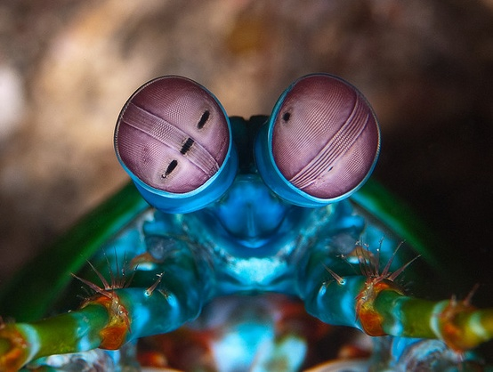

Informações gerais
| Reino: | Animalia |
| Filo: | Arthropoda |
| Subfilo: | Crustacea |
| Classe: | Malacostraca |
| Subclasse: | Ordem |
| Hoplocarida: | Stomatopoda |
O Stomatopoda também é conhecido pelo seu nome científico Odontodactylus scyllarus
Fatos sobre o Stomatopoda
Os olhos mais poderosos do reino animal
Os olhos do Stomatopoda são feitos de milhares de pequenas unidades onde cada uma detecta a luz de forma independente;
ipsum lore ipsum lore ipsum lore ipsum lore ipsum lore ipsum lore ipsum lore ipsum lore ipsum lore ipsum lore ipsum lore ipsum loreipsum loreipsum lore
Seu papel no ciclo de vida marinho
São crustáceos meroplanctônicos e suas larvas podem ser presas abundantes no plâncton, sendo importante alimento para os peixes planctívoros;
ipsum lore ipsum lore ipsum lore ipsum lore ipsum lore ipsum lore ipsum lore ipsum lore ipsum lore ipsum lore ipsum lore ipsum loreipsum loreipsum lore

Quanto mais eu vejo, mais me irrito
Estão entre os crustáceos predadores mais agressivos e de comportamento mais complexo, sendo animais bentônicos crípticos e raramente encontrados, apesar de sua abundância, devido ao hábito escavador.
ipsum lore ipsum lore ipsum lore ipsum lore ipsum lore ipsum lore ipsum lore ipsum lore ipsum lore ipsum lore ipsum lore ipsum loreipsum loreipsum lore
Referências bibliográficas
- https://www.nationalgeographic.com/science/article/natures-most-amazing-eyes-just-got-a-bit-weirder
- https://pt.wikipedia.org/wiki/Stomatopoda
- https://www.google.com/search?q=Stomatopoda&sxsrf=APq-WBvTz8OI6LjwwlMoWeDMEXGwyRbruQ:1645025366440&source=lnms&tbm=isch&sa=X&ved=2ahUKEwirwPOExYT2AhVRH7kGHYgfCwoQ_AUoAXoECAEQAw&biw=933&bih=880&dpr=1#imgrc=wnbI1zzw9rjB6M